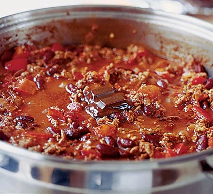

Chilliconcarne Recipe

Classic Chilliconcarne
Prepare this easy homemade Chilliconcarne ahead of time and save in the freezer, uncooked, for when you need it during a busy weeks
Ingredients
- 2 olive oil, chilli powder
- 750g lean beef mince
- 90g pack cherry tomatoes
- 800g passata or half our basic tomato sauce
- 300ml hot beef stock
- Cheese
Steps
- To make the meat sauce, heat 2 tbsp olive oil in a frying pan
- cook 750g lean beef mince in two batches for about 10 mins until browned all over.
- Finely chop 4 slices of tomatoes from a 200g pack
- Stir through the meat mixture
- Pour over 800g passata or half our basic tomato sauce recipe
- 300ml hot beef stock
- Add a little grated cheese